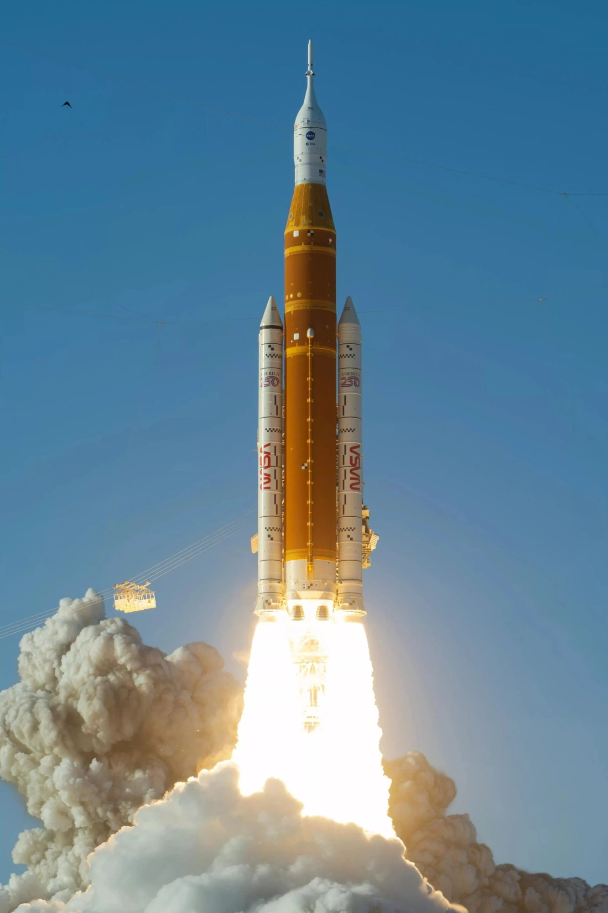
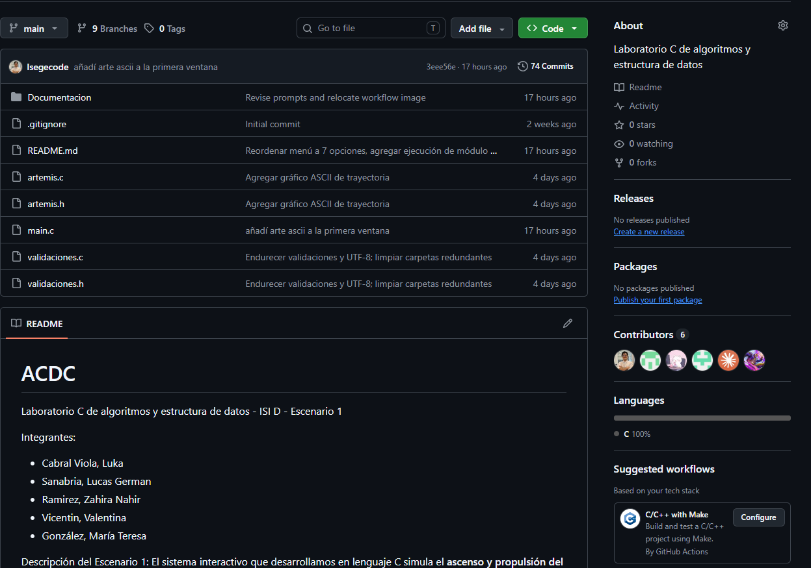
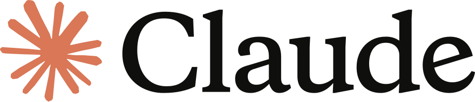

Del reposo en la plataforma a 160 km de altitud, programado en C.
UTN FRRe · Algoritmos y Estructuras de Datos · ISI D · Laboratorio de C
Parte del reposo (v = 0, y = 0). Dura 120 s, hasta el desacople de los SRB.
Sigue acelerando hasta h = 160 km, donde los motores se apagan. Sin resistencia del aire.
Caída libre: se calcula la altitud máxima antes de comenzar a caer.
El programa responde: rapidez y altitud al desacople, rapidez al apagado, altitud máxima en caída libre y aceleración en múltiplos de g.
Menú interactivo y control del flujo general. No contiene cálculos.
Lógica física, structs de simulación, historial y gráfico de trayectoria.
Lectura segura de enteros y flotantes, coma o punto decimal, mensajes de error.
git clone https://github.com/lsegecode/ACDC.git; cd ACDCgcc -Wall -Wextra -finput-charset=UTF-8 -fexec-charset=UTF-8 main.c artemis.c validaciones.c -lm -o simuladorRequiere GCC (en Windows, MinGW-w64 o MSYS2). Genera el ejecutable simulador.
.\simulador.exeEn Linux o macOS: ./simulador.
gcc -Wall -Wextra -finput-charset=UTF-8 -fexec-charset=UTF-8 main.c artemis.c validaciones.c -lm -o simulador.\simulador.exe

La IA fue un apoyo. Revisamos, probamos y adaptamos todo el código. El registro completo está en el README.
Gracias.